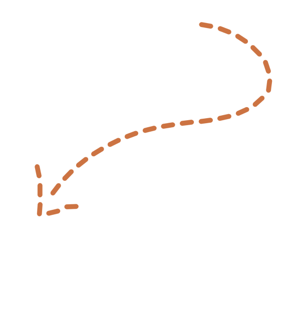
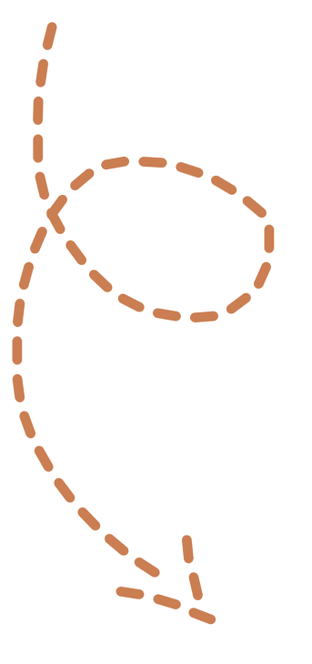
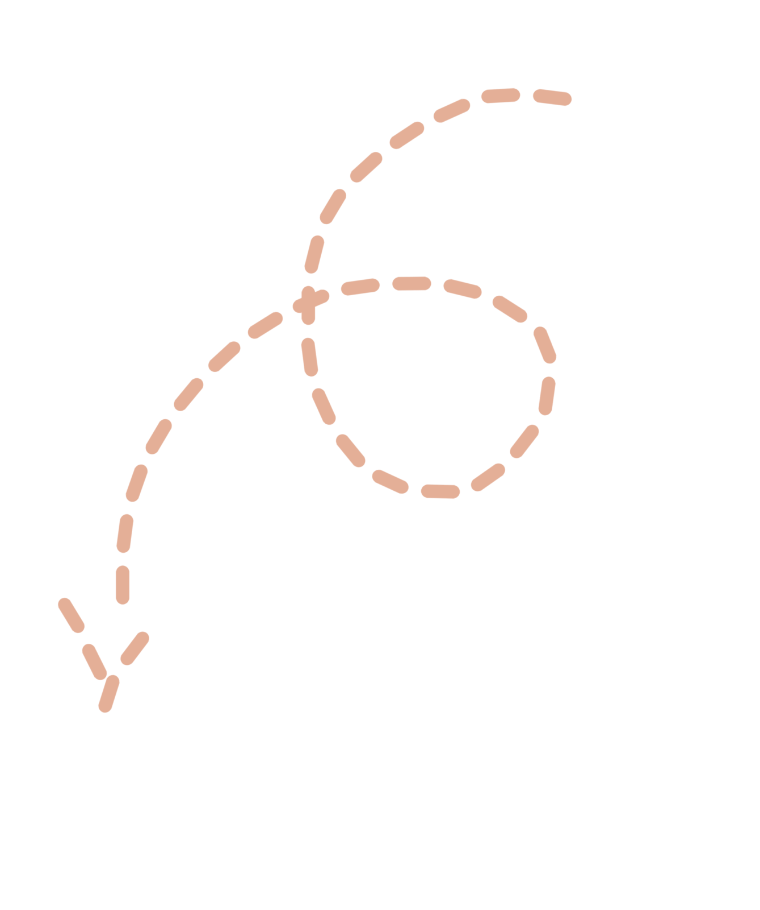
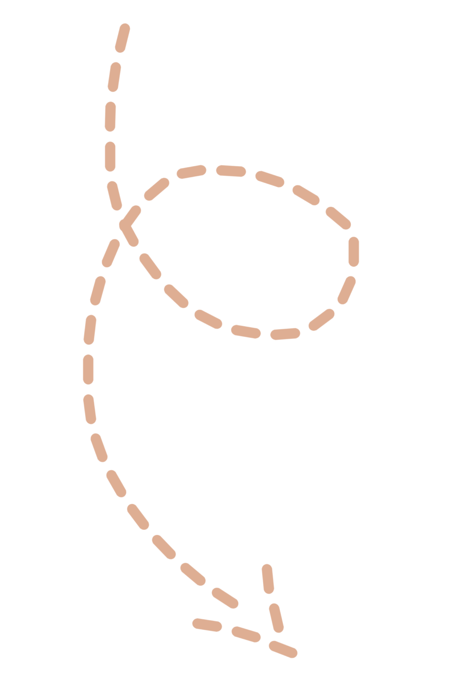
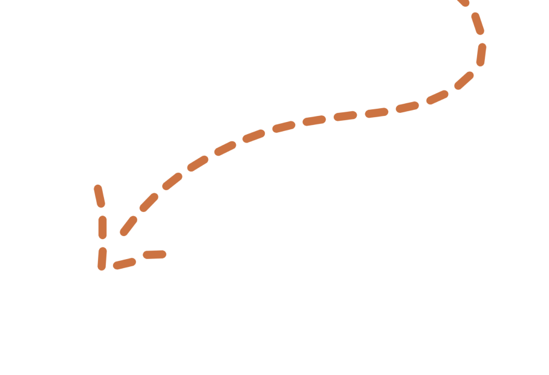

Соловецкие острова
DiscoveRussia
Путь
Как добраться?

Вполне можно проехать 1673 км от Йошкар-Олы до Соловецких островов на собственном авто. Путь займет приблизительно полтора дня с остановками. В стоимость входит: бензин, еда, мотель, платные участки дороги.

. От Йошкар-Олы до Канаши на автобусе Цена: 400 RUB. От Канаши на поезде до Малой Вишеры. Цена:от 10000RUB. Далее на поезде до Шуерецкого. Цена: от 8000RUB.
Туризм
Что посетить?


Соловецкие острова — это не просто крупнейший архипелаг в Белом море. Это уникальная природа Русского Севера, удивительный микроклимат и особые достопримечательности. Поверьте, ступив на остров Соловки в Карелии, вы вернетесь оттуда другим человеком.

Спасо-Преображенский Соловецкий монастырь
Этот мужской монастырь по праву считается главной достопримечательностью Русского Севера. Крупная обитель занимает огромную территорию на Большом Соловецком острове.


Соловецкие лабиринты
Это спиралевидные сооружения из насыпей и валунов, визуально похожих на ловушки саамов. До сих пор назначение лабиринтов не установлено, но большинство ученых склоняются к тому, что они нужны были для религиозных обрядов.
Соловецкий морской музей
В музее представлены экспонаты монастыря, относящиеся к истории соловецкого судоходства и освоения севера. Музей работает с 2007 года и с каждым днем все больше туристов интересуются им. Здесь можно увидеть карты, чертежи, фотографии разных экспедиций .


Ботанический сад
Это уникальный сад на Большом Соловецком острове. Как мы уже говорили, несмотря на то, что остров Соловки соседству с Арктикой, на нем нет признаков вечной мерзлоты. Поэтому здесь был разбит чудесный сад со множеством необычных для севера растений. Здесь цветут яблони, черемухи, акация. Сад постоянно пополняется новыми представителями фауны.
Мыс Белужий
На этом мысу обитают редкие беломорские белухи, иногда их можно увидеть с берега. Мыс расположен на острове Большой Соловецкий, в нескольких метрах от него построена смотровая вышка.

Отели
Где остановиться переночевать?


"Соловецкая Слобода"

"Тепло, сухо, тихо, горячая вода постоянно, удобная кровать и отличный персонал." "Гостеприимный персонал." "Расположение удобное, wi-fi есть"
Цена: 5000RUB.
"Прекрасное отношение к гостям, отличное обслуживание в ресторане." "Удобные номера, красивая обстановка, шикарный шведский стол на завтраки"
Цена: не указана.

“Островито Морюшко”


“Соло”

"Чистое белье, мягкая постель. Приличные завтраки. Близость к туристическим местам." "Радушный прием, теплый, уютный номер!!!"
Цена: не указана.
"Очень комфортный современный отель, который старается предоставить своим гостям наилучший сервис." "Персонал добрый и общительный"
Цена: не указана.

"Соловки- Отель"


Питание
Где остановиться перекусить?

“Соловецкая Изба”

ТИП КУХНИ Русская СПЕЦИАЛИЗИРОВАННОЕ МЕНЮ Подходит для вегетарианцев ВРЕМЯ ПРИЕМА ПИЩИ Бранч, Завтрак


“Соловецкая слобода ”

ТИП КУХНИ Русская ВРЕМЯ ПРИЕМА ПИЩИ Завтрак УСЛУГИ Места для сидения, Обслуживание посетителей за столиками



Соловки — это холст, сотканный из духовной силы и телесной слабости, человеческой радости и вселенского горя, силы воли и предательств, красивой лжи и уродливой правды, шипения прибоя и неповторимых закатов, серебристых рыб и шелеста крыльев. Он прошит корнями вереска и лучами солнца. Насмотревшись на северное сияние в Соловках, отправляйтесь в Сестрорецк для расслабления души и тела.
Путешествуй с DiscoveRussia